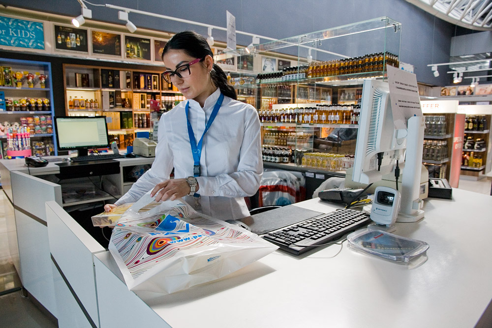

VIP-обслуговування нашого аеропорту створено для найвищого комфорту найвимогливіших пасажирів. Особистий асистент подбає про планування вашого часу, а в самому VIP-терміналі організовує комфортний відпочинок: оформить документи, здасть багаж, запропонує конференц-зал, а також принесе вишукані страви та напої. VIP-обслуговування також означає паспортний контроль без черги, мікроавтобус бізнес-класу і, звичайно, задоволення всіх ваших особистих запитів.
Послуги найвищого рівня комфорту найвибагливішим пасажирам: +38 (067) 540-55-55
На першому поверсі в загальнодоступній зоні терміналу А розташовані банкомати наступних банків: «Південний», «ПУМБ», «Райффайзен Банк Аваль», а також банкомат міжнародної мережі Euronet. Зверніть увагу, банкомати в Україні видають гроші тільки в національній валюті - гривні. У разі, якщо Ваша карта номінована в іншій валюті, при видачі коштів буде проведена конвертації відповідно до тарифів Вашого банку. Банкомати працюють в цілодобовому режимі.
Аеропорт розробив вишукане меню, що складається зі страв української та європейської кухні, щоб порадувати своїх пасажирів і гостей в ресторані «Політ». Він розташований в будинку-пам'ятці архітектури VIP-терміналу, відкритому в 1955 році. Ми відтворили унікальний інтер'єр, завдяки чому Ви зможете зануритися в історичну атмосферу 1950-х років.
Ресторан «Політ» працює цілодобово, тому Ви зможете оцінити наші страви незалежно від часу вильоту літака. У ресторані розміщені інформаційні монітори, завдяки яким Ви завжди будете в курсі статусу свого рейсу.
Нашим гостям ми також надаємо можливість розмістити свій автомобіль безкоштовно на стоянці VIP-терміналу.
В аеропорту магазин безмитної торгівлі Pavo Duty Free розташований у залі відльоту міжнародних рейсів в терміналі А. Зробити покупки Ви зможете після проходження предполітних формальностей. Також можна замовити товари duty free при вильоті з VIP терміналу.
Магазин пропонує широкий асортимент наступних товарів відомих світових і українських брендів:
У магазині Duty Free представлений широкий асортимент продуктів і товарів світових і українських брендів

Ви можете скористатися послугою оренди автомобіля в аеропорту «Харків». Пункт оренди знаходиться на першому поверсі терміналу А навпроти зони реєстрації.
Більш широкий вибір автомобілів доступний при попередньому бронюванні. Для цього скористайтеся контактами служб з бронювання автомобілів, які вказані нижче:
аеропорт Львів
вул. Ромашкіна, 1, Термінал А.
Час роботи: понеділок-п'ятниця 09: 00-18: 00
телефони:
+38 057 781 00 06
+38 094 977 30 06